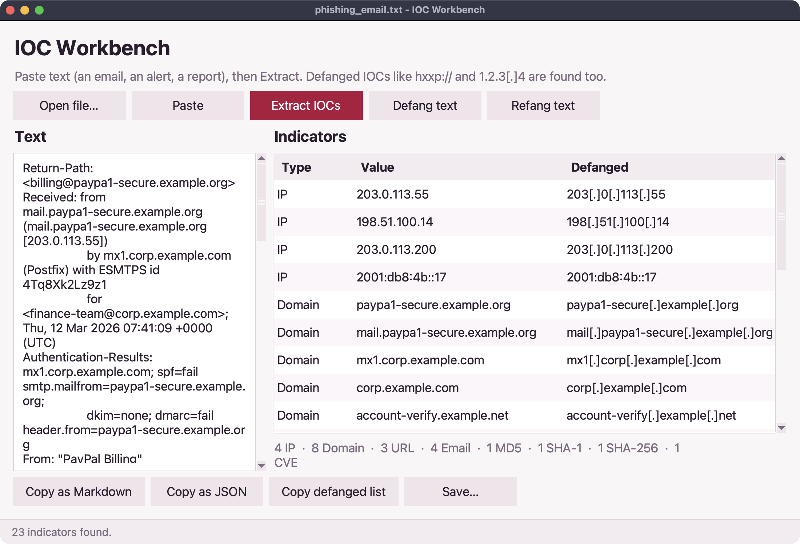

Extract and defang IOCs from a phishing email
A finance team got an urgent "payment failed" email. You'll check whether it's forged, pull out every indicator of compromise (IOC) and share them safely, defanged so nobody clicks by accident. Every step runs in your browser.
1.Read the email
The sample is a raw email with its headers, as you'd export it from a mail client.
import fs
let email = fs.read("apps/data/phishing_email.txt")
for line in email.lines().slice(0, 14) {
say(line)
}2.Check the sender
The Authentication-Results header says whether the sending server was allowed to send for that domain. re.find_all picks out each verdict.
import fs
import re
let email = fs.read("apps/data/phishing_email.txt")
for check in re.find_all("(spf|dkim|dmarc)=(\\w+)", email) {
say(check)
}
let sender = re.match("From: .*<(?P<address>[^>]+)>", email)
say("Claims to be from:", sender.address)SPF and DMARC both fail, and the domain is paypa1 with a number one. Forged.
3.Pull out every IOC
ioc.extract finds IPs, domains, URLs, email addresses, file hashes and CVE numbers in one go, each list without repeats.
import fs
import ioc
let found = ioc.extract(fs.read("apps/data/phishing_email.txt"))
for kind in found {
say(f"{kind}: {len(found[kind])}")
}
say(found.urls)4.Leave out your own domains
Your own mail servers show up too. Filter them out before you block anything.
import fs
import ioc
let found = ioc.extract(fs.read("apps/data/phishing_email.txt"))
let ours = "corp.example.com"
let outside = found.domains.filter(fn(d) { return not d.ends_with(ours) })
say(outside)5.Defang and share
Defanged indicators (hxxp://, [.]) can't be clicked by accident in a chat or ticket. ioc.rows and report.markdown make a table to paste.
import fs
import ioc
import report
let found = ioc.extract(fs.read("apps/data/phishing_email.txt"))
let rows = ioc.rows(found).filter(fn(r) { return r.type in ["urls", "ips", "sha256"] })
say(report.markdown(rows.map(fn(r) {
return {"type": r.type, "indicator": ioc.defang(r.value)}
})))Where next
The IOC extractor app does this for any file from the command line, and the IOC workbench is a desktop app for pasting and cleaning indicators:

On your computer you can also look each indicator up in VirusTotal or AbuseIPDB with the intel library. See the ioc reference.